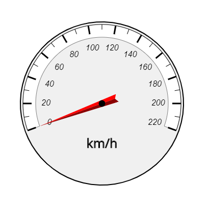

Home → Segment Gauge
Gauge is a composite graphical object designed to visualize the values of the measured physical quantity (Fig. 1).

Fig. 1 - Segment Gauge Example
The following scripts should be included in the <head> section:
To create an object, the main parameters are passed to the constructor function:
id - gauge identificator as a text string.
context - CanvasRenderingContext2D for drawing the gauge.
cx - X coordinate of the base segment center.
cy - Y coordinate of the base segment center.
r_in - base segment inner radius.
thickness - thickness of the base segment.
init_angle - the initial angle of the base segment in degrees. May take negative values.
angle - angle of the base segment in degrees.
Examples of using various properties and methods of the object.
min_value - minimum value of scale.
max_value - maximum value of scale.
value - current value of measuring parameter.
speed - speed of change of the measuring parameter when it is programmatically changed.SegmentGauge is a composite object. It includes:
base_segment - base segment of the object.
frame - frame represented by a Segment.
scale - scale represented by a SegmentScale.
arrow - arrow represented by a SegmentArrow.
base_segment_gradient - fill gradient. Type of value is SegmentGradient.
base_segment_background - fill color (applies if fill gradient is not specified).
base_segment_border_width - base segment border width.
base_segment_border_color - base segment border color.The borders of the base segment can be set separately using direct access to it through the base_segment property.
frame_gradient - fill gradient. Type of value is SegmentGradient.
frame_background - fill color (applies if fill gradient is not specified).
frame_border_width - border width.
frame_border_color - border color.text - a label on the device telling, for example, the unit of measurement.
text_offset_x - offset of the label along the X axis relative to the center of the device.
text_offset_y - offset of the label along the Y axis relative to the center of the device.font - label font.
text_color - label color.
text_border_width - text border width.
text_border_color - text border color.
visible - value true ensures object visibility.
in_progress - flag takes the value true during the animation.
build() - performs basic calculations of the shape and style of gauge, taking into account the specified properties and flags.
draw() - draws an object.
instanceCopy() - creates an independent copy of the object.
valueToAngle(value) - function for calculating the arrow angle depending on the value of the measured parameter.
setValue(value) - function of setting the current value of the measured parameter.
changeValue(value, speed, delay) - animation of changing the current value of the measuring parameter to value with speed after delay.
Events triggered by a SegmentGauge are implemented using a CustomEvent.
In the detail.gauge field, a link to the object itself is passed.
segment-gauge-changed - state of the object is changed.
Home → Segment Gauge